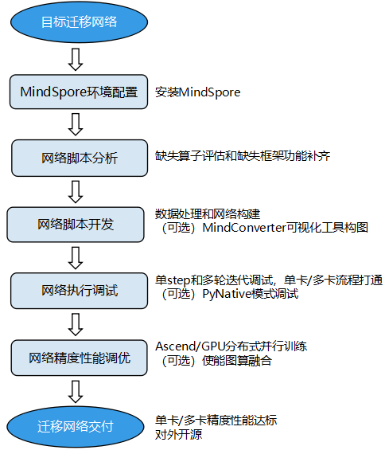

概述

本迁移指导包含从其他机器学习框架将神经网络迁移到MindSpore的完整步骤。
迁移流程的准备工作从必须的环境配置开始，然后分析网络脚本所包含的算子。MindSpore脚本开发会从数据处理代码开始，使用MindConverter进行网络构建得到迁移后的网络脚本，最后迁移推理执行脚本。构建完成后的优化过程包含缺失算子的开发与调试、网络性能与精度调优。迁移指导附迁移流程常见问题的解决方法和网络迁移完整样例。每章会提供具体样例供参考。具体迁移流程见下图：

准备工作
网络迁移首先需要安装最新版本的MindSpore，本章会详细描述安装过程与知识准备。知识准备包括对MindSpore组件ModelZoo和Hub的基本介绍，包含用途、场景与使用方法。此外还有云上训练的相关教程：使用ModelArts适配脚本，在OBS上传数据集，然后进行线上训练。
网络脚本分析
使用MindSpore进行网络脚本之前必须对原框架的脚本进行分析，这一章首先会介绍在MindSpore框架下评估算子方法，常见方法包括查询MindSpore与PyTorch/TensorFlow算子映射表等。需要分析的另一部分为语法评估与框架功能，包括静态图语法支持。
网络脚本开发
在网络脚本分析完成后就可以使用MindSpore对新网络进行开发了。这章从网络输入层的数据处理功能开始，重点介绍网络脚本构建流程：使用MindConverter或手写映射脚本，还可以借助PyTorch/TensorFlow自带的可视化工具构图。流程包含开发的最佳实践方法和常用自验项目，并列出了常见问题处理方法。
算子开发&调试
部分网络在迁移到MindSpore框架时会存在不支持的算子，除了向MindSpore开发者社区反馈之外，用户可以选择开发自定义MindSpore算子。本章包括进行算子开发的教程与示例，还有常见的调试技巧。
网络调试
在网络脚本开发完成并补齐算子后，需要对模型进行调试保证输出结果正确。这章介绍了常用的网络调试思路：单Step与多轮迭代调试。常用的调试方法包括使用PyNative模式比对子网输出结果，MindSpore也支持自定义调试信息。最后会提供常见问题的处理方法。
精度&性能调优
在网络脚本调试完成并可以顺利输出结果之后，我们需要对模型进行调试达到预期性能。MindSpore为开发者提供了Profiler性能调试工具，在算子性能、迭代性能、数据处理性能等方面提供了易用、丰富的调试功能，帮助用户快速定位、解决性能问题。调试教程分为Ascend平台与GPU平台调优，并提供了三个使用Profiler工具的例子。
推理执行
MindSpore可以基于训练好的模型，在不同的硬件平台上执行推理任务，还可以基于MindSpore Serving部署在线推理服务。基于模型的推理可以通过训练参数文件或者网络模型文件进行推理，基于MindSpore Serving的在线推理可以通过gRPC或者RESTful等接口访问推理服务。
网络迁移调试实例
本章包含了一个完整的网络迁移样例，使用ResNet50为例子，从对标网络的分析与复现开始，详细说明脚本开发与精度调试调优等步骤，最后列出了迁移过程中的常见问题与相应优化方法，如多机同步问题、框架性能问题等等。
常见问题
我们会在这里列出整个网络迁移过程的常见问题与相应解决方法。